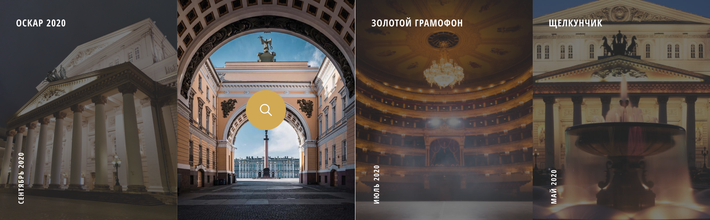

Большой театр
Большо́й теа́тр — петербургский театр, существовавший в 1784—1886 годах, с 1886 года — Петербургская консерватория. Первое постоянное в Санкт-Петербурге, крупнейшее в России и одно из крупнейших театральных зданий в Европе XVIII.
афиша
Большой театр
Большо́й теа́тр — петербургский театр, существовавший в 1784—1886 годах, с 1886 года — Петербургская консерватория. Первое постоянное в Санкт-Петербурге, крупнейшее в России и одно из крупнейших театральных зданий в Европе XVIII.
афиша
О Театре
Самый лучший театр СПБ
Как свидетельствуют архивные документы, первое каменное здание Большого театра начали возводить в 1775 году по проекту Антонио Ринальди. В дальнейшем, после того как Ринальди упал с лесов и не мог лично наблюдать за ходом работ, Екатерина II поручила немецкому театральному декоратору и архитектору Людвигу Филиппу Тишбейну создать новый проект театра, который и был воплощён архитекторами Ф. В. фон Бауром и М. А. Деденёвым. Открытие его состоялось в 1783 году, хотя, основываясь на других свидетельствах, годом открытия можно считать 1784 год.
немного о цифрах

1600 посадочный мест

350 лет истории

наши постановки
(с) Все права защищены. Большой театр. 2020
Разработано d-e-n.ru